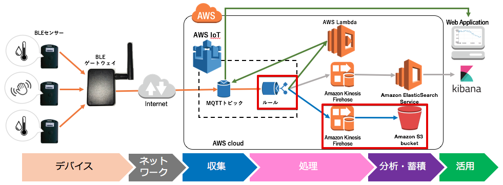
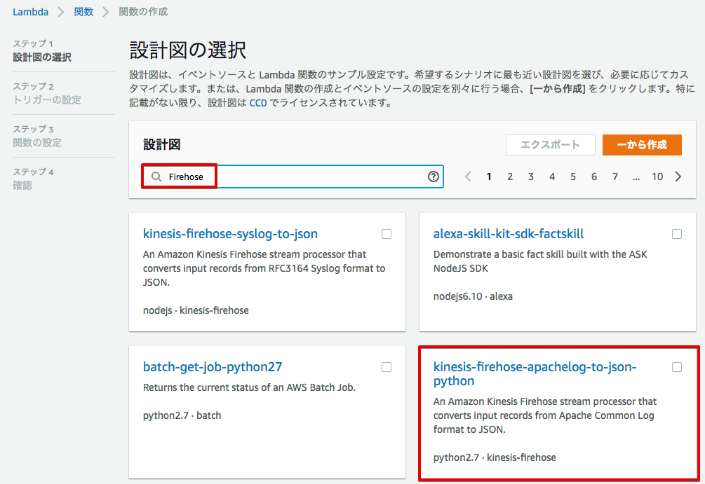

5. シナリオ1: センサーデータをS3に保存する¶
Amazon Kinesis Firehose は、ストリーミングデータを AWS にロードする最も簡単な方法です。ストリーミングデータをキャプチャ、変換して、Amazon Kinesis Analytics、Amazon S3、Amazon Redshift、および Amazon Elasticsearch Service にロードすることができます。
BLEゲートウェイは、温湿度センサーが送信するBeaconを受信し、バイナリデータとしてAWS IoTに送信しています。AWS IoTのルールエンジンにご自身のセンサーデータのトピック名”sensor/<参加者番号>”を登録して、そのメッセージだけを「Amazon Kinesis Firehose」に送信します。Kinesis Firehoseでは、Lambda関数を使用して、受け取ったバイナリデータを活用が容易なJSON形式に変換し、Amazon S3へ保存します。
S3に保存されるデータは、下記のJSON形式になります。
{
"model": "590080BC", ← センサーのモデル番号
"src_mac": "FFEAD7E638B8", ← センサーのMACアドレス
"dst_mac": "AC83F3A041D2", ← ゲートウェイのMACアドレス
"rssi": -47, ← Beaconの電波強度
"vbat": 3.34, ← 電池電圧
"tempreature": 26.97, ← 温度
"humidity": 42, ← 湿度
"@timestamp": "2017-05-11T08:34:43" ← タイムスタンプ
}
5.1. S3バケットを作成¶
データを保存するS3バケットを作成します。
サービス一覧から[S3]をクリックして開きます。

S3の設定画面が表示されれます。[バケットを作成する] ボタンを押します。

バケット名に、”sensor-data-<参加者番号>”、リージョンは、[米国東部(バージニア北部)] を選択し、[次へ]をクリックします。次の画面でも[次へ]をクリックして下さい。
| 項目 | 設定 |
|---|---|
| バケット名 | sensor-data-<参加者番号> |

下記の画面が出るまで、[次へ]をクリックして下さい。最後に、[バケットを作成] をクリックすると、S3バケットが作成されます。

“sensor-data-<参加者番号>” のバケットがリージョン：[米国東部(バージニア北部)] に作成されているか確認して下さい。複数の参加者で1つのAWSアカウントを共用している場合、他のIAMユーザーのバケットも表示されます。

5.2. データ変換用のLambda関数を準備する¶
Amazon Kinesis Firehoseは、受け取ったデータをLambda関数を使用して加工できます。ここでは、AWSにデータ変換用のLambda関数を登録します。
はじめに、Lambda関数を下記のリンクからPCにダウンロードして下さい。このzipファイルは、後ほどLambdaの設定画面でAWSにアップロードします。
https://s3-ap-northeast-1.amazonaws.com/awsiot-handson-dojo-jp/ranger-raw-data-to-json.zip
サービス一覧から[Lambda] をクリックして開きます。

下記のような画面が表示されるので、[今すぐ始める] をクリックします。

Lambda関数の作成画面が表示されるので、サーチボックスに”Firehose”と入力し、”kinesis-firehose-syslog-to-json-python”をクリックします。
トリガーの設定画面が表示されますが、何もせず、[次へ]をクリックします。

先ほどダウンロードしたLambda関数のzipファイルをAWSにアップロードします。 下記のような画面が表示されるので、必要事項を入力して下さい。 ロール：[カスタムロールの作成] を選択すると、別画面でIAMの設定画面が出てきますので、設定に従って、ロールの設定を行って下さい。
| 項目 | 設定 |
|---|---|
| 名前 | ranger-raw-data-to-json-<参加者番号> |
| 説明 | An Amazon Kinesis Firehose stream processor that converts input records from BLE GW format to JSON. |
| コード エントリ タイプ | ZIPファイルをアップロード |
| 関数パッケージ | ranger-raw-data-to-json.zip (先ほどダウンロードしたもの) |
| ロール | カスタムロールの作成 |

IAMの設定画面では、[新しいIAMロールの作成] を選択し、ロール名を入力し、[ポリシードキュメントを表示] をクリックして下さい。このIAMロールでは、Lambda関数のアクセス権限を設定します。Kinesis Firehoseからデータを受け取り、データ変換を行い、Kinesis Firehoseへデータを書き戻すことを可能にし、CloudWatchログへのログの出力を許可しています。
| 項目 | 設定 |
|---|---|
| IAM ロール | 新しいIAMロールの作成 |
| ロール名 | lambda_KinesisFirehoseAccess-<参加者番号> |

[編集] をクリックし、下記のポリシードキュメントを入力して下さい。[許可] をクリックするとIAMの設定画面は閉じます。

{
"Version": "2012-10-17",
"Statement": [
{
"Action": [
"firehose:*"
],
"Effect": "Allow",
"Resource": "*"
},
{
"Action": [
"logs:CreateLogGroup",
"logs:CreateLogStream",
"logs:PutLogEvents"
],
"Effect": "Allow",
"Resource": "arn:aws:logs:*:*:*"
}
]
}
ロールが[既存のロール] に変更され、ロール名として、”lambda_KinesisFirehoseAccess-<参加者番号>” が表示されていることを確認し、[次へ] をクリックして下さい。

確認画面が表示されますので、下までスクロースし、[関数の作成] をクリックして下さい。

Lambda関数の作成に成功すると、下記の様な画面が表示されます。

BLEゲートウェイは、周囲のBLE Beaconを全て受信し、AWS IoTへ送信します。AWS IoTのルールエンジンのトピックフィルターで、トピック “sensor/<参加者番号>”だけを処理するようにしますが、BLEゲートウェイは、他のユーザーの温湿度センサーのデータもAWS IoTへ送信します。
AWS IoTに送信するデータの中に、BLEセンサーのBDアドレス (Bluetooth Device Address = MACアドレス)を付加していますので、ご自身の温湿度センサーからのデータだけを処理するために、この情報を利用し、Lambda関数でBLEセンサーのBDアドレスを確認し、ご自身の温湿度センサーだけをLambda関数で処理するようにします。
Lambda関数内の”my_temphumid_sensor_mac” をご自身の温湿度センサーのMACアドレスに書き換えます。
ご自身のセンサーのラベルに記載されているセンサーのMACアドレスを確認し、Lambda関数内のの”my_temphumid_sensor_mac” を修正し、[保存] ボタンを押して下さい。


5.3. Kinesis Firehoseの設定¶
Lambda関数の登録が終わりましたので、Amaozn Kinesis Firehoseの設定を行います。Kinesis Firehoseのストリーム名を指定し、データの吐き出し先をS3とします。また、データ変換を有効にして、変換用のLambda関数を指定します。S3へデータを書き出す周期は、60秒周期とします。
サービス一覧から[Kinesis]をクリックして開きます。

Kinesisの画面が開きますので、[Firehose コンソールに移動] をクリックして下さい。

[Create Delivery Stream] をクリックして下さい。

Destination(データの吐き出し先)をS3として、Delivery stream nameを設定し、先ほど作成したS3バケットを選んで、[Next] をクリックして下さい。
| 項目 | 設定 |
|---|---|
| Destination | Amazon S3 |
| Delivery stream name | sensor-data-to-s3-<参加者番号> |
| S3 bucket | sensor-data-<参加者番号> |

Lambda関数でデータ変換を行いますので、”Data transformation” を有効にして、先ほど作成したLambda関数を選んで下さい。 IAM role で、”Firehose delivery IAM role” を選択すると、IAM roleの設定画面が開きます。
| 項目 | 設定 |
|---|---|
| Data transformation | Enable |
| Lambda function | ranger-raw-data-to-json-<参加者番号> |
| Buffer interval | 60 (S3へ60秒周期でファイルが保存されます) |
| Error Logging | Disable |
| IAM role | Firehose delivery IAM role |


“新しい IAMロールの作成” を選択し、ロール名を入力して、[許可] をクリックすると、Firehoseの設定画面に戻ります。ここでは、自動的にIAMロールが作成されます。ここで作成されるIAMロールでは、Kinesis Firehoseのアクセス権限を設定しています。S3へのアクセス、Lambda関数の実行が許可されます。
| 項目 | 設定 |
|---|---|
| IAM ロール | 新しい IAMロールの作成 |
| ロール名 | firehose_delivery_role-<参加者番号> |

Firehoseの設定画面で、[Next] をクリックして下さい。

最後に、[Create Delivery Stream] をクリックして下さい。

Kinesis Firehose Delivery Streamsの作成が開始されました。

5.4. AWS IoT ルールの設定¶
AWS IoTでは、受信したデータをルールエンジンを用いて、他のAWSの各種サービスと連携できます。 ルールエンジンの設定は、SQLステートメントとアクションで構成されます。SQLステートメントのトピックフィルターでデータを抽出し、アクションとしてAWSの各種サービスを指定します。
このシナリオでは、BLEゲートウェイが送信するトピック “sensor/<参加者番号>” を、トピックフィルターとして設定し、送付先を先ほど作成したKinesis Firehose Delivery Streamsを設定します。
サービス一覧から[AWS IoT]をクリックして開きます。

ルールを作成します。メニューから[Rules]をクリックします。以下の様な画面が表示された場合は、[Create rule]をクリックします。

あるいは、ルール(Rule)一覧が表示された場合は、[Create]をクリックします。

下記の項目を入力し、[Add action]をクリックします。
| 設定項目 | 値 |
|---|---|
| Name | iotrule_firehose_s3_<参加者番号> |
| Attribute | * |
| Topic filter | sensor/<参加者番号> |
“*”は、半角の＊(アスタリスク)です。

“Send messages to an Amazon Kinesis Firehose stream” を選択し、[Confgure action] をクリックします。

Stream nameで、”sensor-data-to-s3-<参加者番号>” を選択し、[Create a new role] をクリックします。

IAM role nameに、”IOT_to_Kinesis_Firehose-<参加者番号>” と入力し、[Create a new role] をクリックします。

IAM role nameで、”IOT_to_Kinesis_Firehose-<参加者番号>” を選択し、[Update role] をクリックします。 “Successfully updated role.” と表示されたら、[Add action] をクリックします。

Create a rule 画面に戻ります。[Create rule] をクリックして、ルールを作成します。

5.5. S3に保存されたデータを確認する¶
サービス一覧から[S3]をクリックして開きます。
“sensor-data-<参加者番号>” のバケットをクリックします。

データが保存されたフォルダまで辿って下さい。
60秒周期でファイルが保存される設定になっているため、ファイルが現れるまで数分かかることがあります。画面を更新しながら、待って下さい。

ファイルをクリックすると、ファイルの概要が表示されます。[ダウンロード] をクリックしてダウンロードして内容を確認して下さい。

下記の形式のセンサーデータが確認できます。
{"dst_mac": "F0B3865C39C3", "@timestamp": "2017-05-17T01:13:28", "humidity": 44, "vbat": 3.31, "tempreature": 25.25, "rssi": -44, "model": "590080BC", "src_mac": "E9070D5A15FB"}